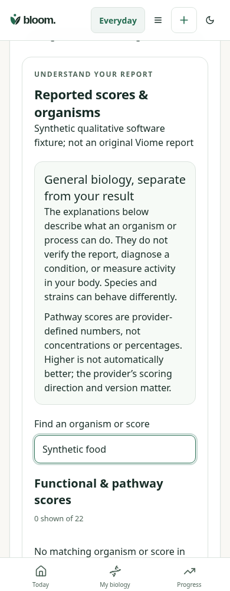
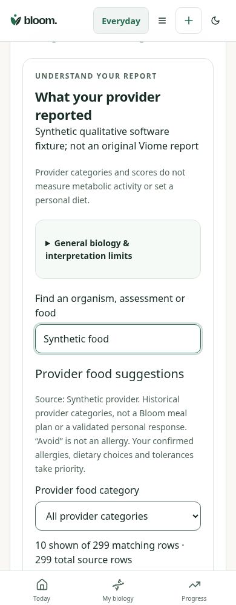
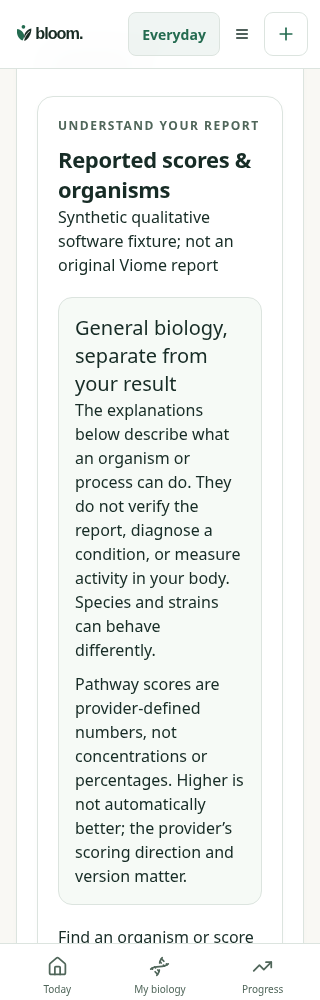
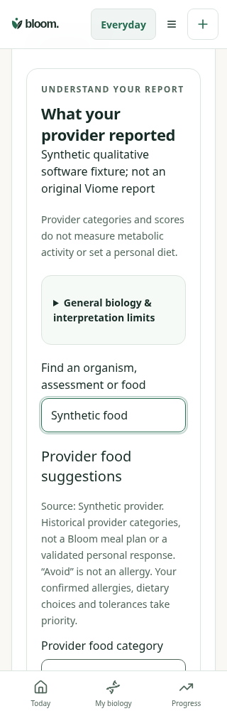
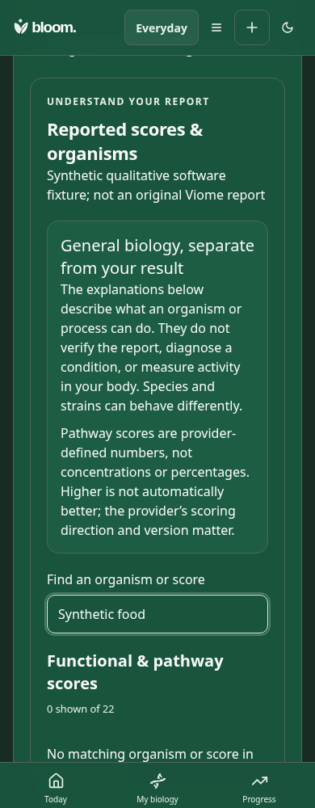
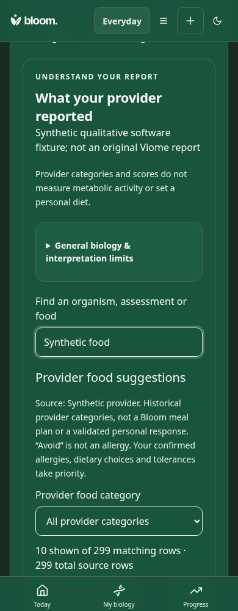

What your provider reported
Matched actual App review: synthetic22 assessments/299 foods. No original PDF or real personal data. Before50ebea9. Original captures remain unmarked.
- 1Qualitative categories stay categorical; general interpretation limits move into a disclosure.
- 2Food suggestions now expose provider attribution, search, category filter and source counts.
- 3Compact source rows with Show all and provenance, without allergy or planning authority.
390px light
Before
After · 1, 2, 3
320px light
Before
After
390px dark
Before
After